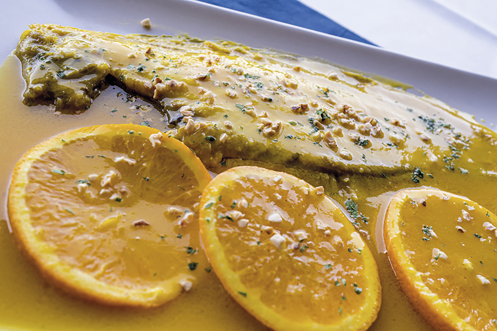

Orange Sole

Description
This is one of my grandma's best recipes. Although expensive, orange sole is gonna be your favorite recipe, perfect for a special occasion where you wanna make your guests feel delighted.
Ingredients
For 4 people
- 4 soles (without the head)
- 200g of flour
- 1l of orange juice
- 100ml of orange liquor
- 10g of salt
- 150ml of olive oil
- Some orange slices and crushed almonds as garnish (optional)
Steps
- The first step is to preheat the oven in grill mode.
- Then we need to add salt to both sides of each sole.
- Next up we have to coat the soles in flour.
- Heat up the oil in a big pan and fry the coated soles from both sides.
- Once fried put the fish in an oven tray, one next to another and don't turn off the stove.
- With the oil still hot, put the stove at low heat and add the orange liquor to the pan to cook it untill the alcohol has evaporated.
- When the liquor doesn't smell too much like alcohol it's time to start adding the orange juice bit by bit, integrating it to the mix of liquor and oil and reducing it for about 10 minutes at low heat.
- Our sauce is done and now we have to add it to the oven tray making shure to hit every part of the soles.
- It's time to put the tray in the oven for 5 to 10 minutes untill we see the sauce is reduced and the fish is starting to roast.
- The last step is to plate the soles and serve with sauce on top, and add the garnish. I recommend to eat it with some bread to absorve the sauce that's left in the plate.
Home